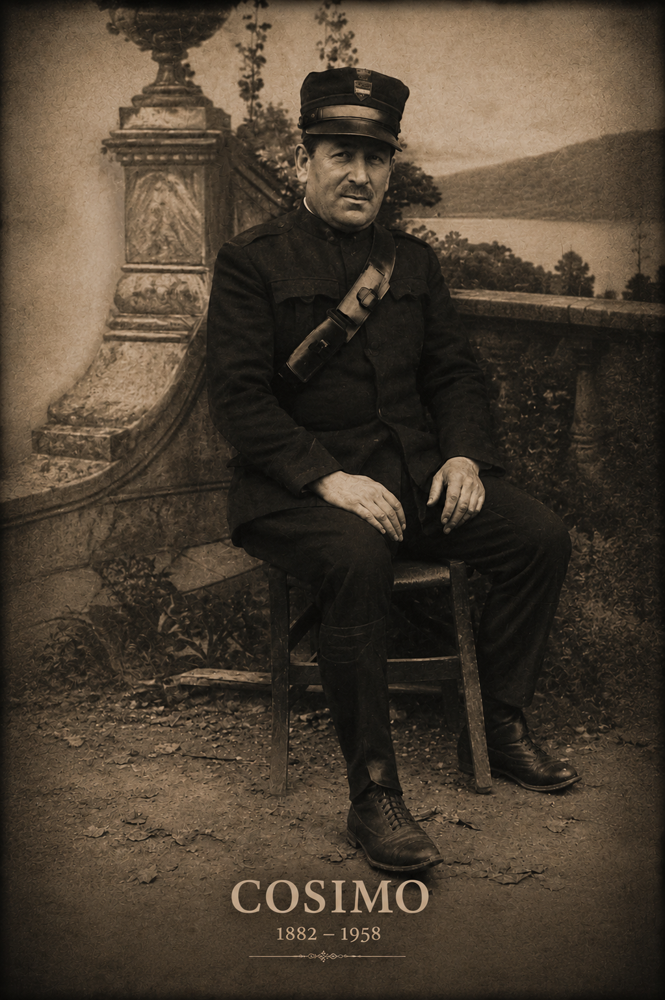

Fotografia originale restaurata digitalmente tramite AI · Archivio Fotografico Cardiello.
Dati principali
| Nome | Cosimo Cardiello |
|---|---|
| Nascita | 20 dicembre 1882 |
| Luogo di nascita | Eboli |
| Morte | 24 giugno 1958 |
| Luogo di morte | Eboli |
| Padre | Vito Cardiello |
| Madre | Sofia Gallotta |
| Professione | Barbiere, Guardia Municipale |
| Coniugi | Angela Fresolone, Concetta Marzullo |
| Figli documentati | 12 |
| Linea esposta | prosegue attraverso Angelo Cardiello |
Biografia
Cosimo Cardiello nacque il 20 dicembre 1882 a Eboli da Vito Cardiello e Sofia Gallotta.
Iniziňò la propria attività come barbiere, mestiere che esercitò per molti anni nella città di Eboli. Successivamente entrò nel corpo delle Guardie Municipali, seguendo una tradizione familiare già avviata dal padre.
Nel corso della vita contrasse due matrimoni. Dal primo con Angela Fresolone nacquero cinque figli; dal secondo con Concetta Marzullo nacquero altri sette figli, tra cui Angelo Cardiello, futuro sindaco di Eboli.
Morì il 24 giugno 1958 all'età di 75 anni. Le sue spoglie riposano nella cappella di famiglia nel cimitero di Eboli.
Primo matrimonio
Angela Fresolone
| Nascita | 15 novembre 1885 |
|---|---|
| Morte | 7 settembre 1918 |
| Padre | Vincenzo Fresolone |
| Madre | Vincenza Accarino |
| Matrimonio | 11 ottobre 1908 |
| Luogo | Eboli |
Angela Fresolone morì prematuramente all'età di 33 anni.
Figli del primo matrimonio
| Nome | Data |
|---|---|
| Vito | 1909–1909 |
| Vito | 1910–1910 |
| Sofia | 1911–2009 |
| Nicola | 1914–1985 |
| Carmine | 1916–1943 |
Secondo matrimonio
Concetta Marzullo
| Nascita | 17 settembre 1888 |
|---|---|
| Luogo | Eboli |
| Morte | 1971 |
| Luogo | Eboli |
| Matrimonio | 27 dicembre 1919 |
| Luogo | Eboli |
Concetta Marzullo sposò Cosimo Cardiello il 27 dicembre 1919 dopo la morte della prima moglie Angela Fresolone.
Figli del secondo matrimonio
| Nome | Data |
|---|---|
| Francesco | 1920–1974 |
| Angelo | 1922–2006 |
| Carmela | 1923–2016 |
| Antonio | 1924–1943 |
| Antonino | 1927–2013 |
| Agnese | 1931–1999 |
| Vincenzo | 1933– |
Professione e vita pubblica
La vita lavorativa di Cosimo Cardiello si svolse tra attività artigianale e servizio pubblico. Dopo aver esercitato il mestiere di barbiere entrò nel corpo delle Guardie Municipali di Eboli, partecipando alla vita civile della città durante un periodo di grandi trasformazioni storiche.
Fonti
- Registro dei battesimi
- Registro dei matrimoni
- Registro dei morti
Note genealogiche
Vito ha rappresentanto un punto di riferimento per Eboli durante la sua vita tramite il suo lavoro come Guardia Municipale.
Documenti e approfondimenti
Sezione in aggiornamento. In futuro saranno inserite immagini degli atti originali e ulteriori note archivistiche.